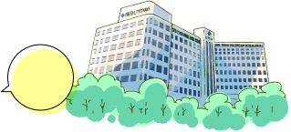
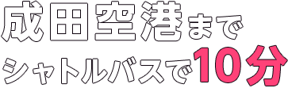
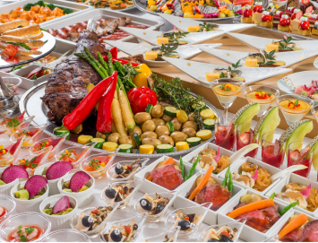
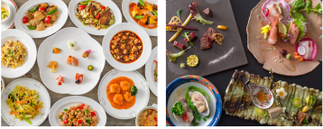
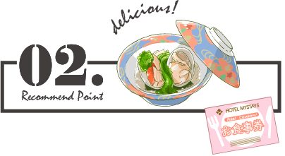
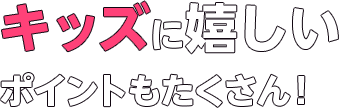
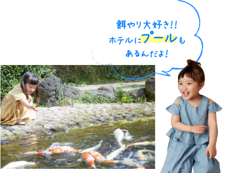
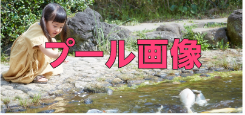

10分 
キッズ＆パパママも大満足！ 成田空港までシャトルバスで ホテルマイステイズプレミアム成田のすゝめホテルマイステイズプレミア成田は成田国際空港から車で10分の好アクセスに位置し、 空港や最寄り駅からの無料送迎バスも随時運行しています。 早朝便が多いLCCをご利用の方も出発前のひと時をホテルでゆっくりとお過ごしいただけ、大変便利です。

ホテルマイステイズプレミア成田は成田国際空港から車で10分の好アクセスに位置し、空港や最寄り駅からの無料送迎バスも随時運行しています。 早朝便が多いLCCをご利用の方も出発前のひと時をホテルでゆっくりとお過ごしいただけ、大変便利です。




6:00～10:00の朝食ビュッフェをご利用にならない方には、ホテル内のレストランでランチ・ディナーにご使用いただけるミールチケット（大人2,136円／小学生 1,306円）をご用意。 約70種類の品揃えを誇るビュッフェレストラン「ガーデニア」の他、四季折々のお料理を楽しめる日本料理「あづま」、モダンな店内の中華料理「蓬莱」では空港の夜景を眺めながらお食事いただけます。

ホテル内の日本庭園では鯉のエサやりもお楽しみいただけます。プールもお子様に好評です。 飛行機が見えるお部屋もご用意がございますので、成田空港に離発着する飛行機を眺めながらご家族でのんびりとしたお時間をお過ごしいただけます。

